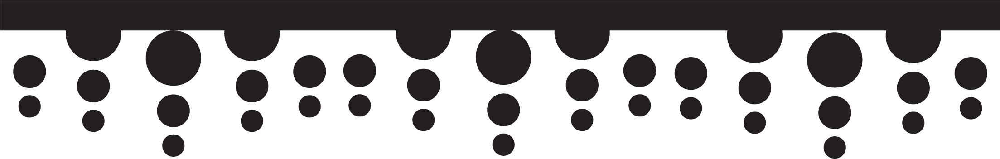

Groundwater

Recharge(mm/yr)
Aquifer
0
20
100
500+
Type
Sand and Gravel
Unconsolidated sand and gravel aquifers are the most productive and easily accesible aquifers in the Pacific Northwest. They are typically shallow, and found in lowland basins. Sand and gravel aquifers commonly yield 20 - 2000 gallons per minute to wells.
Volcanic
Volcanic rock aquifers are more geologically complex than sand and gravel aquifers, resulting in more variable hydrologic productivity. Volcanic aquifers are often difficult to access, but can hold large volumes of water in rock fractures. Volcanic aquifers can yield 1 - 1000 gallons per minute to wells, but often yield less than 400.
Other Rocks
Aquifers categorized as "other" are typically minor hydrologic units that are difficult to access, have poor yields, or both. Other rock yells yield 1 - 100 gallons per minute to wells.
Carbonate
In the southeastern corner of Idaho, a small area consists of carbonate rock aquifers. In these areas, aquifers are generally poor yielding, but can be very deep.